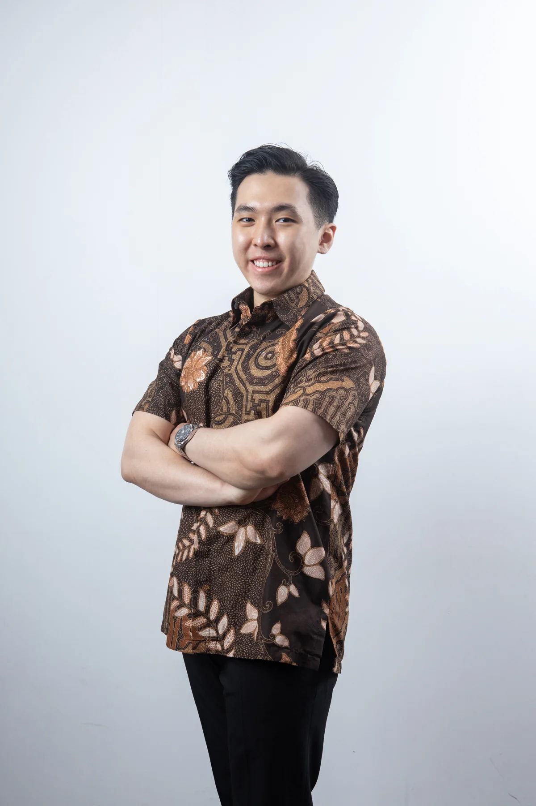

Working where products are shaped: threat modeling, hands-on testing, security automation, and clear risk reporting that helps engineers make better releases.
Cybersecurity · AI Expert · Jakarta, Indonesia
AI & security
with context.
I am an AI expert and cybersecurity practitioner. I help teams make security practical: close to the product, clear to the business, and grounded in how systems actually fail.
Independent thinking. Practical security.

01 / Profile
Technical depth.
Human clarity.
I am an AI expert who moves between hands-on security work, engineering conversations, and decisions that need to make sense beyond the terminal.
I am Ardian Danny, a cybersecurity practitioner and founder based in Jakarta. My work spans product security, penetration testing, incident response, threat management, governance, and security consulting. I care about the part between finding a problem and helping people act on it.
I enjoy the human side of security as much as the technical side: listening to what a client is trying to protect, translating technical risk into a decision, and staying close enough to the team that the advice becomes real improvement.
01Make risk understandable.
02Build controls that ship.
03Keep learning in public.
02 / Experience
Across the security surface.
Selected roles and the perspective each one added. Confidential client and internal project details are intentionally not listed.
Leading security engagements and a consulting team across offensive security, defensive support, and governance advisory. Practical delivery, trusted relationships, no unnecessary disclosure.
Coordinated incident response and automation while partnering with risk teams on threat investigations and data protection.
03 / Credentials
Earned through practice.
A foundation built from real systems, continuous study, and sharing what I learn with other practitioners.
Certifications
Offensive & cloud security
OSCP · CREST CRT · CREST CPSA · CRTP · eCPPTv2 · CCSP-AWS · CNSP · CAP
Education
Bina Nusantara University
Bachelor of Cyber Security, 2023. GPA 3.96. Researcher, mentor, and Web Exploitation Stream Leader.
Community
Teach what you learn
Mentoring security practitioners, competing in CTFs, and writing to make technical security more approachable.
04 / Elsewhere
Keep in touch.
No project catalogue here. Just a few places to find my work, ideas, and the company I lead.
05 / Contact
Let's make security
move the business.
For security leadership, product security, incident response, and consulting conversations.
Start a conversation ↗